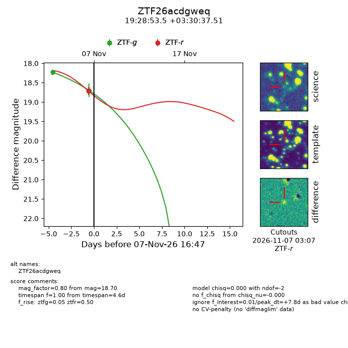
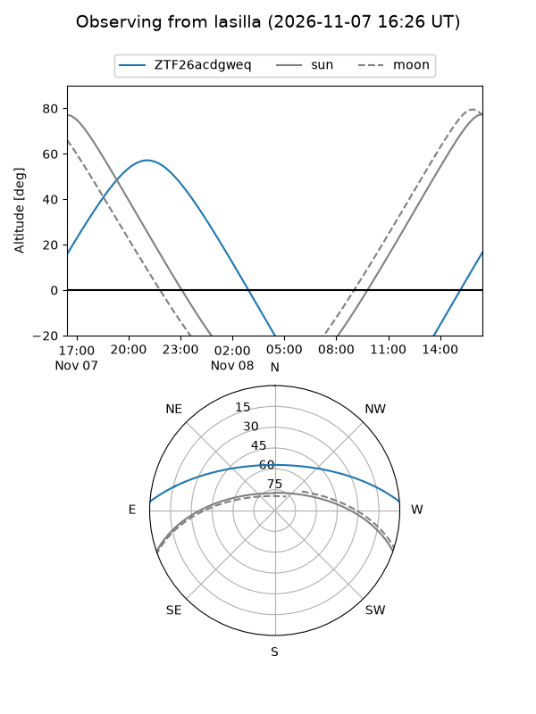
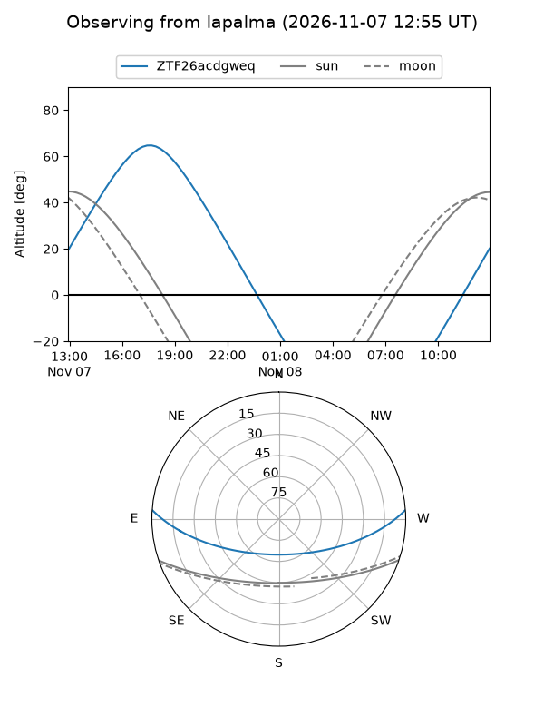
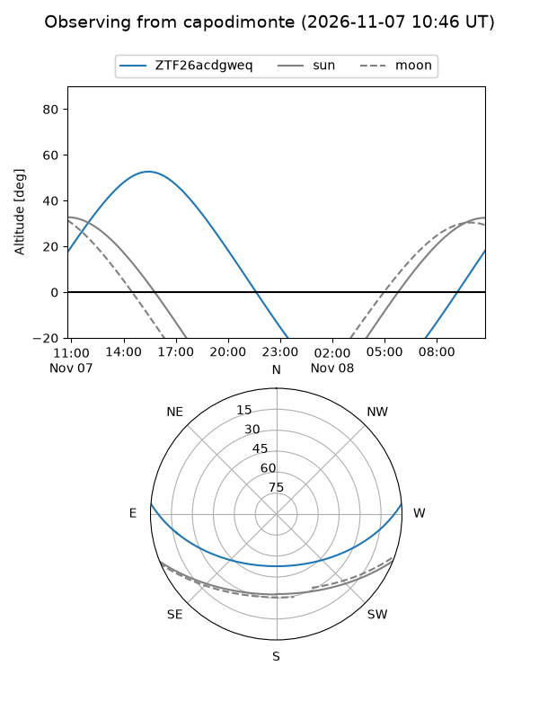
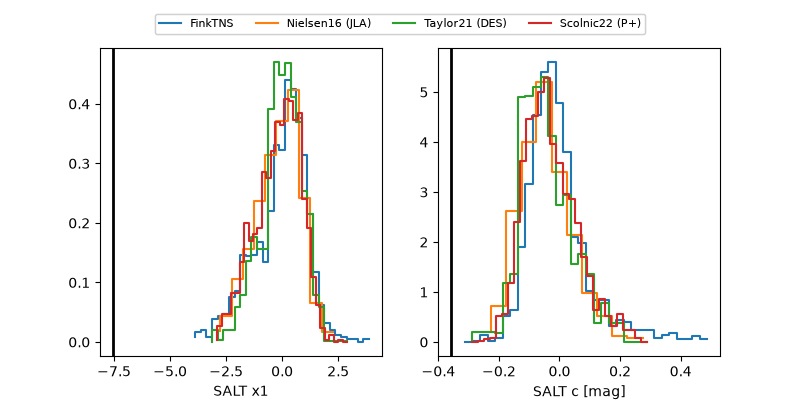

ZTF26acdgweq
Target ZTF26acdgweq at 2026-11-08 04:44
Aliases and brokers:
FINK-ZTF: ztf.fink-portal.org/ZTF26acdgweq
Lasair-ZTF: lasair-ztf.lsst.ac.uk/objects/ZTF26acdgweq
ALeRCE-ZTF: alerce.online/object/ZTF26acdgweq
Direct TNS query: direct search
alt names
ZTF26acdgweq (ztf,fink_ztf)
Coordinates:
equatorial (ra, dec) = 292.2229,+3.51042
equatorial (HMS+DMS) = 19:28:53.49,+03:30:37.51
galactic (l, b) = (40.3683,-6.69626)
Flags:
peak dt: +8.3
Photometry:
last ztfg=18.70, ztfr=18.71
2 ztfg, 1 ztfr detections
Lightcurve

Visibility



Additional plots
